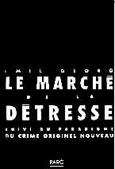
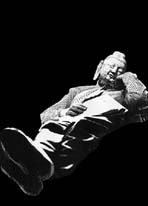
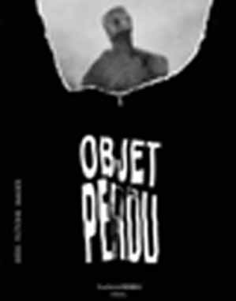
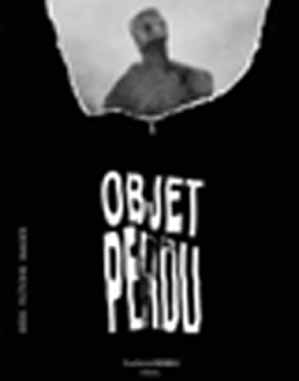

|
CATALOGUE
éd. PARC collection grise
10/15

Conseils au collégien, Amédée
Fargue, 1997. ISBN 2-912010-03-9
L'évangile selon Pitbull, Felix Katzmann,
1997. ISBN 2-912010-02-0
Déclaration universelle des droits du Cochon,
1997. ISBN 2-912010-01-2
Mort parce que bête, Friedrich Nietzsche, 1998.
ISBN 2-912010-06-3
Traité de bouddhisme zen à l'usage du
bourgeois d'Occident, Marcel-Tetsuo Kato, 1998. ISBN
2-912010-05-5
Mars ou crève, Alexander Zheimer, 1998. ISBN
2-912010-04-7
Le Marché de la détresse, Emil Georg,
1998. ISBN 2-912010-10-1
collection
15/21

Procès, John Gelder, 1996. ISBN
2-912010-00-4
Amour, sévices et morgue, récit, Ahmed
Zitouni, 1998. ISBN 2-912010-07-1
Lettres de rupture et autres produits finis,
récits, Ghislain Ripault, 1998.
ISBN 2-912010-09-8
La Main d'Hermès, roman, Nathalie-Noëlle
Rimlinger, 1999. ISBN 2-912010-11-X
Morsure
PochParc17 Petit Camp, récit, Pierre Mérot,
2001. ISBN 2-912010-14-4
La Revanche du Néandertal ou l'odyssée de
l'espèce, John Gelder, 2001.
ISBN 2-912010-13-6
Carnaccia, roman, Olivier Gambier, 2001. ISBN
2-912010-12-8
Dans mon chien, roman, Pierre Jourde, 2002. ISBN
2-912010-15-2
135 x 195 Haut Risque, roman, Gilles Sebhan, 2003, ISBN
2-912010-16-0
La Désolation des Singes, Tarik Noui, 2003,
ISBN 2-912010-18-7
Dans la douceur du soir, Alain Defossé, 2004 -
ISBN 2-912010-21-7
Lovepointnet, Vincent Colin, 2004 - ISBN
2-912010-20-9
Collectif
Objet perdu - idées, images, fictions,
(Parc - Lachenal) 1995.
ISBN 2-912010-08-X
|

Illustration : A. Gyl, Bouddha couché,
dans : Traité du Bouddhisme à l'usage du
bourgeois d'Occident, éd. Parc.
 Scupture de N.-N. Rimlinger, illustrant La
Main d'Hermès, publiée dans la collection
15 x 21, éd. Parc

Une somme pour le monde
d'aujourd'hui...
Scupture de N.-N. Rimlinger, illustrant La
Main d'Hermès, publiée dans la collection
15 x 21, éd. Parc

Une somme pour le monde
d'aujourd'hui...
|
 Photo: M. Livory
Photo: M. Livory J
J